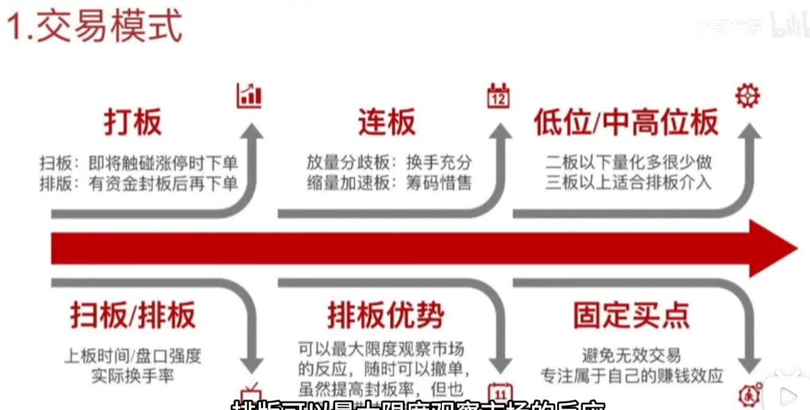
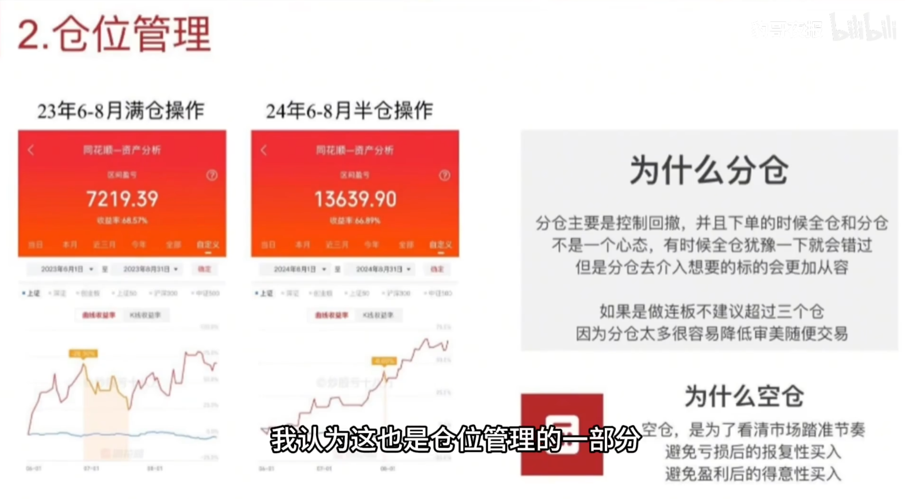
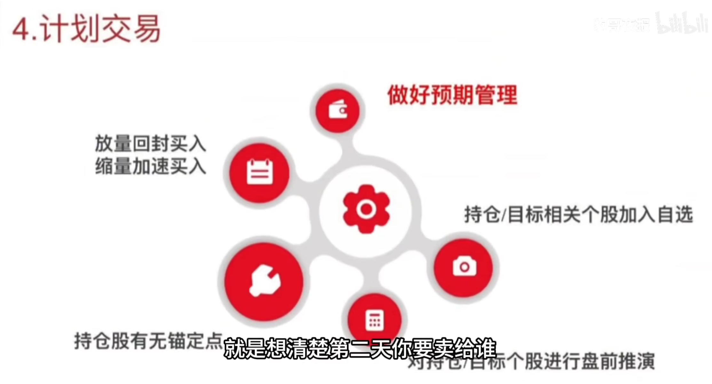
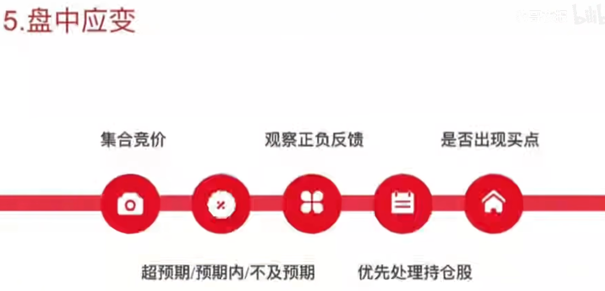
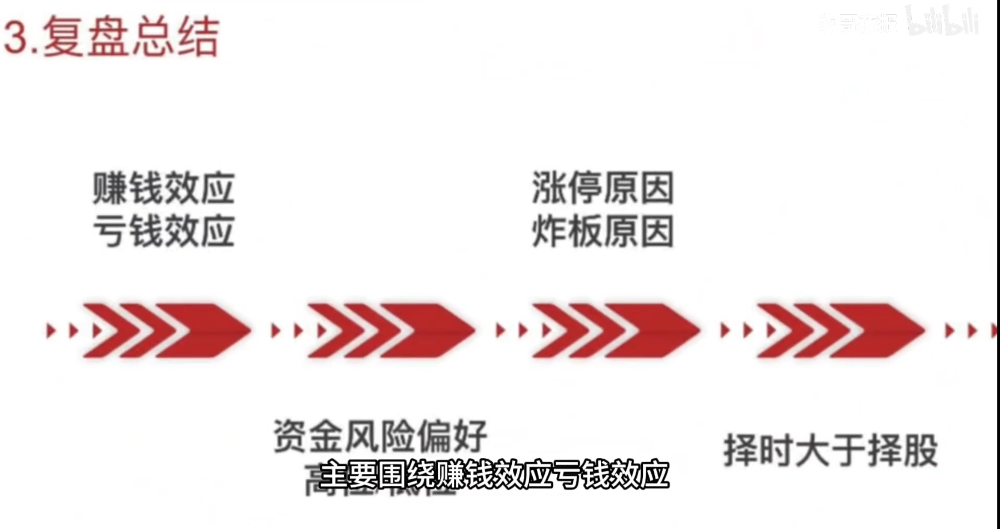
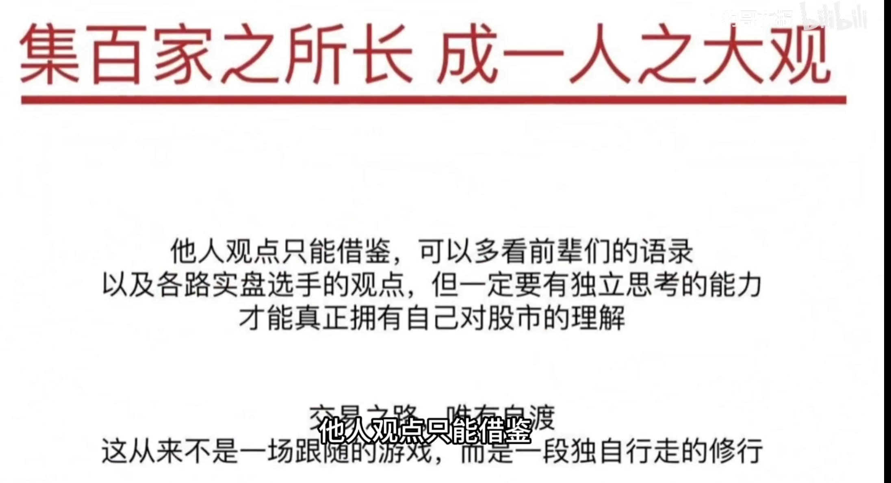

右侧修复节点开仓
目标必须在模式内：三板以上、放量分歧、回封确认、板上买入。看到资金最小阻力方向，再跟随。
高手学习 - 1
这不是半路追强，也不是随手切换。核心是把“三板以上、放量分歧、回封确认、板上排板”压成一个可重复的右侧买点。
仓位用来控制回撤，空仓用来看清节奏，复盘用来校准资金偏好。买入前先想好隔日卖给谁，盘中先处理持仓，再决定是否开新仓。
目标必须在模式内：三板以上、放量分歧、回封确认、板上买入。看到资金最小阻力方向，再跟随。
不做亏后报复性买入，不做盈利后得意性买入，不在高位负反馈时主观博弈穿越。
交易模式
这套模式最值钱的不是“看对一只股”，而是只在固定条件同时出现时出手。买点越窄，反馈越清晰。
市场愿意换手，筹码重新确认，而不是一味缩量加速。
分歧后仍能回封，说明资金合力没有散。
买在确认点，不追半路随机波动。

市场前提
个股穿越很难，尤其在高位负反馈出现时。复盘的重点是理解资金风险偏好，而不是替某只票找理由。
看涨停原因、封板质量、炸板反馈和隔日溢价，确认资金是在做高标抱团、高低切，还是做新题材试错。
仓位纪律
连板交易不建议超过三个仓。仓位越散，越容易从“等待固定买点”滑向“看见就买”。

买前预案
打板赚的是隔日的钱。没有次日竞价、承接者和兑现路径的预期，就没有资格下单。
次日还有没有愿意追高或承接的资金，理由是什么。
题材、地位、情绪、封单质量，哪个因素支撑隔日溢价。
竞价强度、开盘承接、同题材反馈，哪些信号可以继续持有。
低开无承接、核心负反馈、板块分歧扩大，触发先兑现。

盘中流程
开盘阶段只做预期差确认。持仓不及预期时，不急于新开仓，先把旧风险处理干净。
对照盘前预案，先看持仓、核心高标、题材前排。
看相关个股是否给溢价，炸板和核按钮是否扩散。
先兑现不及预期持仓，再等目标回封确认。
不是所有回拉都能买，只买三板以上放量分歧回封。

复盘框架
复盘不是记录涨跌，而是拆清楚资金为什么奖励、为什么惩罚。炸板尤其重要，因为它暴露风险偏好。

禁区清单
禁区不是提醒，是交易前的硬门槛。触发就停止，不临盘重新解释。
独立思考
高手观点只能借鉴，不能代替自己的判断。真正重要的是把每一次执行反馈沉淀成自己的规则。

执行检查
把整页纪律压缩成一张实盘检查表。没有通过，就只观察。
这套模式的胜负手不是交易次数，而是能不能持续等待同一个高质量买点。模式越窄，反馈越清晰，迭代越快。